Material docente en Quarto a partir del script original
Autores/as
Sergi Ramírez
Dante Conti
1 Introducción
Este documento docente presenta, de forma estructurada y comentada, distintos métodos de imputación de datos faltantes en R.
Se ha respetado al máximo la organización del script original, incorporando:
explicación conceptual antes de cada bloque,
comentarios detallados dentro del código,
separación por apartados para facilitar la docencia,
y una estructura adecuada para usar directamente en Quarto.
1.1 Objetivos docentes
Al finalizar este material, el estudiante debería poder:
generar artificialmente valores perdidos,
explorar patrones de missingness,
distinguir entre técnicas básicas y avanzadas de imputación,
aplicar métodos como media, aregImpute, MI, MICE, KNN y missForest,
comparar distribuciones originales e imputadas.
2 Carga de librerías
En este primer bloque cargamos todos los paquetes necesarios para trabajar con visualización, exploración de valores perdidos e imputación.
# Carreguem les llibreries =====================================================# Vector con los paquetes que vamos a necesitar durante toda la práctica.# Incluye paquetes para:# - visualización (ggplot2, plotly, visdata, VIM)# - manipulación de datos (dplyr, tidyverse)# - análisis de missingness (naniar, mi)# - imputación (Hmisc, mice, DMwR, missForest)list.of.packages <-c("ggplot2", "plotly", "dplyr", "tidyverse", "naniar","mi", "Hmisc", "mice", "pool", "VIM", "missForest", "RANN", "caret")# Detectamos qué paquetes no están instalados en el sistema.new.packages <- list.of.packages[!(list.of.packages %in%installed.packages()[, "Package"])]# Si falta alguno, lo instalamos automáticamente.if (length(new.packages) >0) {install.packages(new.packages)}# Cargamos todos los paquetes en memoria.lapply(list.of.packages, require, character.only =TRUE)
# Limpiamos objetos auxiliares que ya no necesitamos y lanzamos el recolector# de basura para liberar memoria.rm(list.of.packages, new.packages)gc()
used (Mb) gc trigger (Mb) max used (Mb)
Ncells 3625439 193.7 7357892 393.0 4386978 234.3
Vcells 6067688 46.3 10146329 77.5 8360610 63.8
3 Generación de datos con valores perdidos
Para practicar métodos de imputación, primero generamos una versión incompleta del conjunto de datos iris, introduciendo un 10% de valores ausentes de forma artificial.
# Generate data with NA's ======================================================# Generamos una copia del dataset iris con aproximadamente un 10% de valores NA.# La función prodNA del paquete missForest introduce missing values de forma# artificial para que podamos practicar imputación.iris.mis <- missForest::prodNA(iris, noNA =0.1)# Otras formas de crear valores ausentes artificialmente en un dataframe:# iris.mis <- mi::create.missing(iris, pct.mis = 10)# Mostramos un resumen básico del dataset con NA para inspeccionar su estructura.summary(iris.mis)
Sepal.Length Sepal.Width Petal.Length Petal.Width
Min. :4.300 Min. :2.000 Min. :1.000 Min. :0.100
1st Qu.:5.100 1st Qu.:2.800 1st Qu.:1.600 1st Qu.:0.300
Median :5.700 Median :3.000 Median :4.300 Median :1.300
Mean :5.796 Mean :3.065 Mean :3.726 Mean :1.168
3rd Qu.:6.350 3rd Qu.:3.400 3rd Qu.:5.100 3rd Qu.:1.800
Max. :7.700 Max. :4.400 Max. :6.900 Max. :2.500
NA's :11 NA's :17 NA's :13 NA's :15
Species
setosa :44
versicolor:45
virginica :42
NA's :19
4 Little Test
Una cuestión importante en datos faltantes es entender si los NA aparecen completamente al azar o siguen algún patrón. Para ello usamos el test MCAR.
# Little Test ==================================================================# Aplicamos el test MCAR (Missing Completely At Random).# Este contraste ayuda a evaluar si los datos faltantes se generan de manera# completamente aleatoria.naniar::mcar_test(iris.mis)
# Interpretación conceptual:# - Si el p-valor es pequeño, rechazamos que los missing sean completamente aleatorios.# - Si el p-valor no es pequeño, no tenemos evidencia para rechazar MCAR.# Nota importante docente:# En el script original aparece el comentario:# "If the test p-value is less than 0 this means..."# Lo correcto estadísticamente sería hablar de un p-valor bajo, por ejemplo < 0.05.
5 Patrones descriptivos de valores perdidos en una base de datos
Antes de imputar, conviene visualizar y describir los patrones de ausencia. Esto ayuda a detectar si hay variables particularmente afectadas o relaciones entre missingness y otras variables.
5.1 Exploración visual de missingness
# Descriptive NA's patterns in a databases =====================================# Cargamos explícitamente visdat para sus funciones de visualización.library(visdat)# Visualizamos el tipo de dato y la presencia de NA en airquality.vis_dat(airquality)
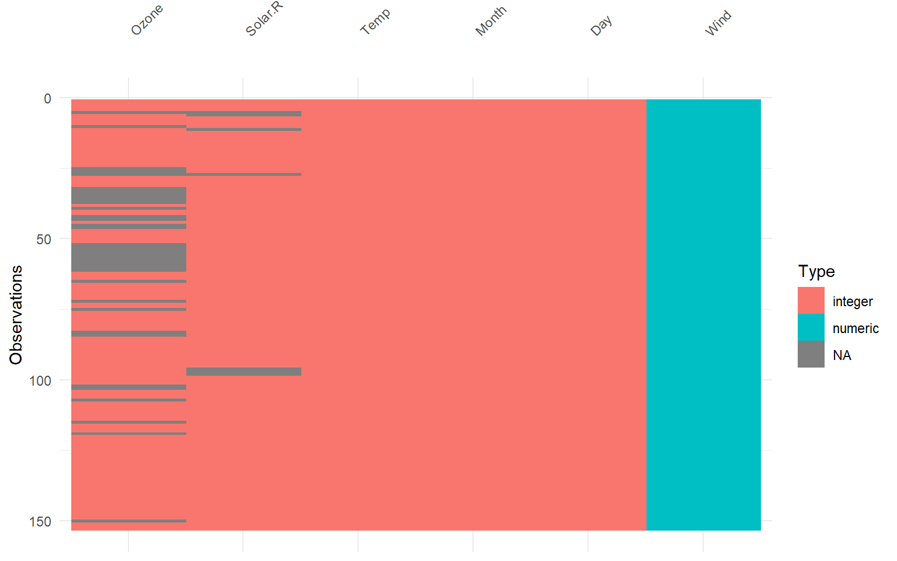
# Visualizamos el tipo de dato y la presencia de NA en iris.mis.vis_dat(iris.mis)
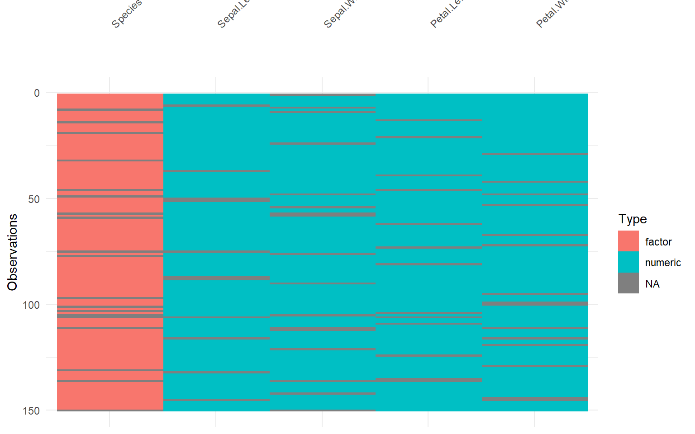
# Representación específica de valores perdidos en airquality.vis_miss(airquality)
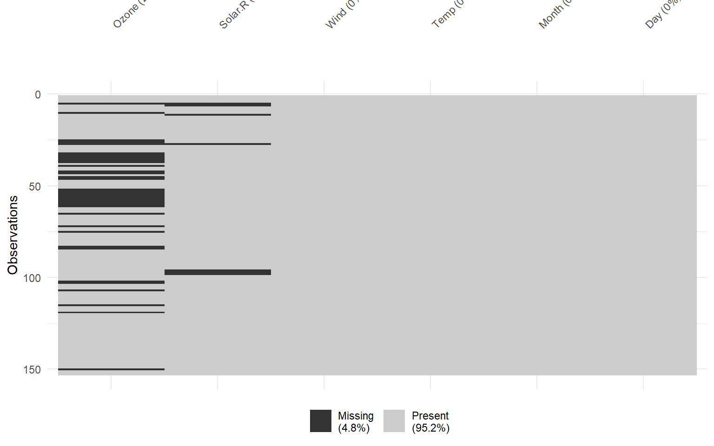
# Representación específica de valores perdidos en iris.mis.vis_miss(iris.mis)
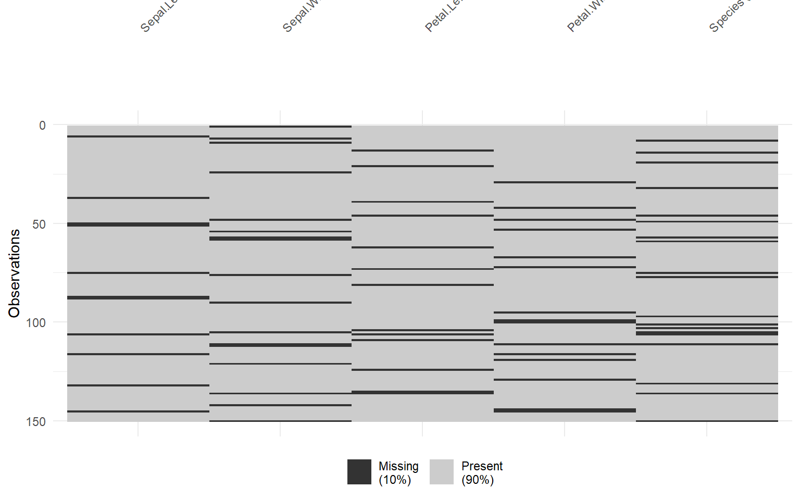
5.2 Relación entre valores perdidos y variables numéricas
# Gráfico básico de dispersión sin destacar missingness.ggplot(airquality, aes(x = Solar.R, y = Ozone)) +geom_point()
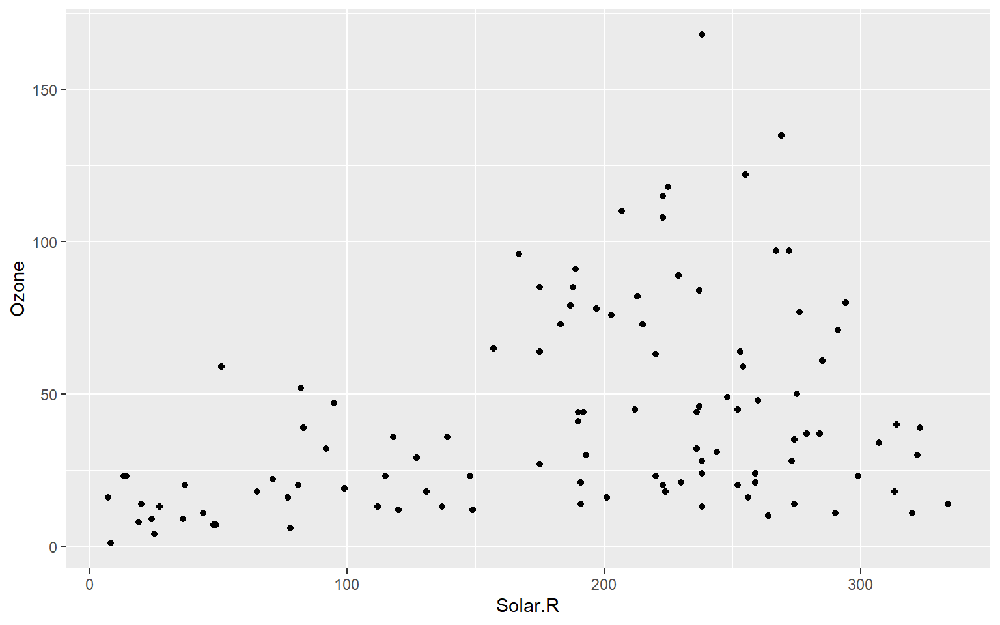
# Gráfico de dispersión destacando las observaciones con missingness.ggplot(airquality, aes(x = Solar.R, y = Ozone)) +geom_miss_point()
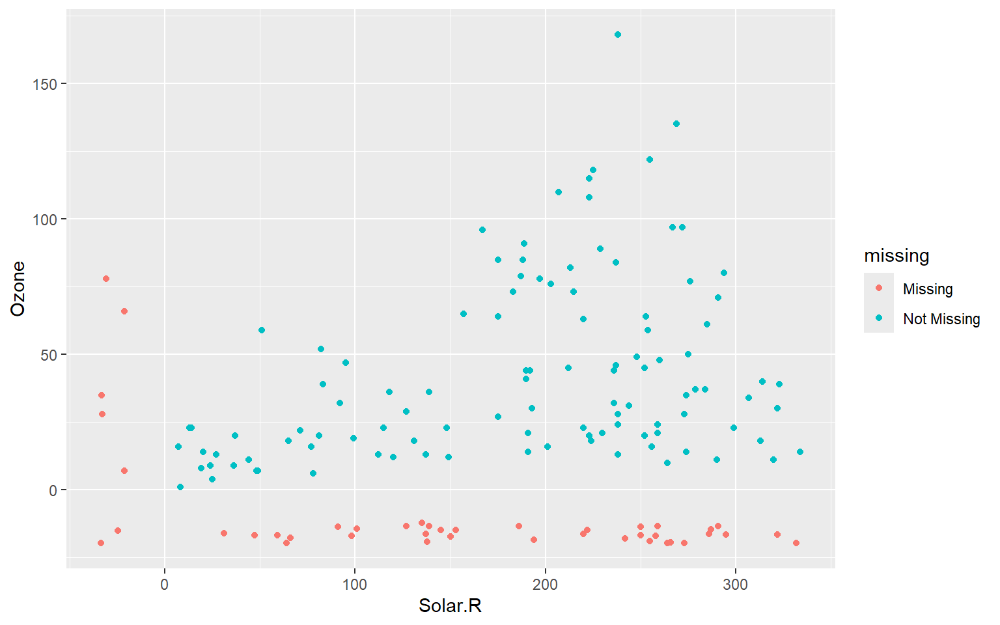
# Añadimos facetado por mes para observar si el patrón de NA cambia según el mes.ggplot(airquality, aes(x = Solar.R, y = Ozone)) +geom_miss_point() +facet_wrap(~Month)
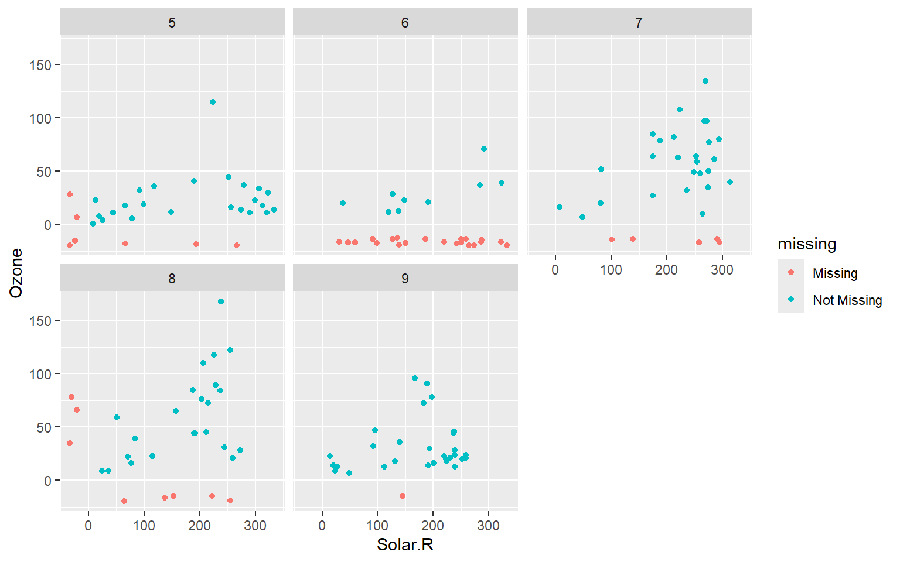
# Mismo gráfico anterior pero con tema oscuro para enfatizar la visualización.ggplot(airquality, aes(x = Solar.R, y = Ozone)) +geom_miss_point() +facet_wrap(~Month) +theme_dark()
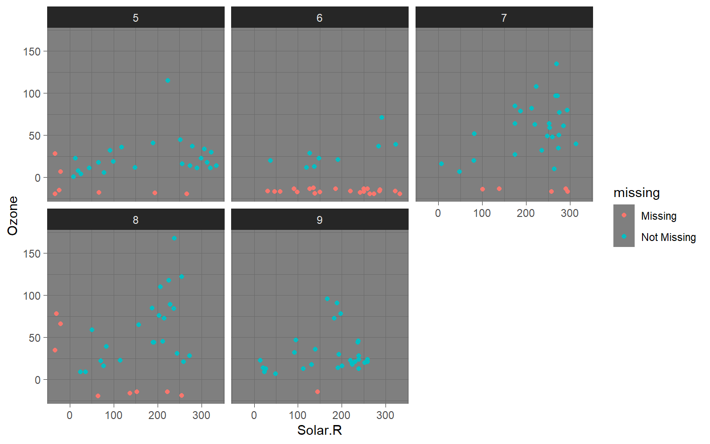
5.3 Visualización del número de missings por variable
# Visualizamos cuántos NA tiene cada variable.gg_miss_var(airquality) +labs(y ="Look at all the missing ones")
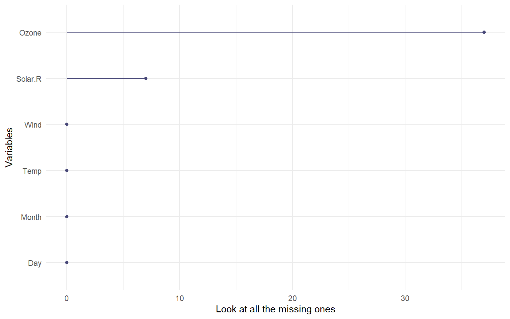
5.4 Sombra de missingness y resumen por grupos
# Detect NA in Dataframe =======================================================# Creamos un shadow matrix: añade variables auxiliares con sufijo _NA que indican# si el valor original era NA o no.aq_shadow <-bind_shadow(airquality)# Calculamos estadísticas descriptivas de Solar.R separando los registros según# si Ozone es NA o no.airquality %>%bind_shadow() %>%group_by(Ozone_NA) %>%summarise_at(.vars ="Solar.R",.funs =c("mean", "sd", "var", "min", "max"),na.rm =TRUE )
# Representamos la distribución de la temperatura diferenciando los casos en los# que Ozone está ausente de aquellos en los que no lo está.ggplot(aq_shadow, aes(x = Temp, colour = Ozone_NA)) +geom_density()
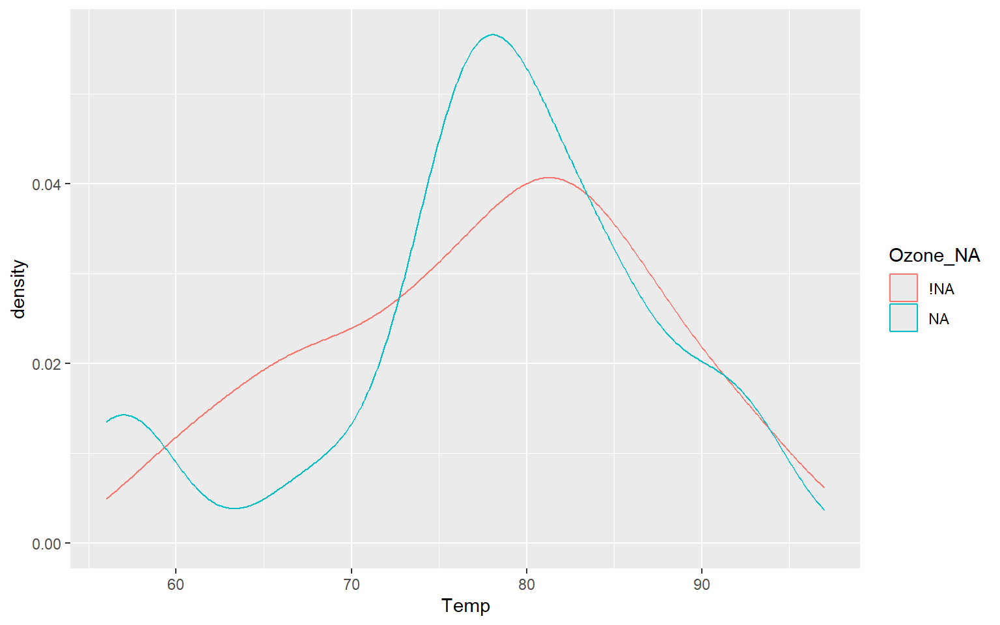
5.5 Estadísticos de missingness
# Extract statistics with NAs in Data Frame ====================================# Proporción de casos (filas) que contienen algún NA.prop_miss_case(airquality)
[1] 0.2745098
# Porcentaje de casos con NA.pct_miss_case(airquality)
[1] 27.45098
# Resumen por fila del patrón de missingness.miss_case_summary(airquality)
# Tabla de frecuencia del número de missings por fila.miss_case_table(airquality)
# Proporción de missings por variable.prop_miss_var(airquality)
[1] 0.3333333
# Porcentaje de missings por variable.pct_miss_var(airquality)
[1] 33.33333
# Resumen de missingness por variable.miss_var_summary(airquality)
# Tabla de frecuencia de missings por variable.miss_var_table(airquality)
6 1.1 Imputación básica
En este apartado se ilustran técnicas sencillas de imputación, útiles para comprender la lógica general aunque normalmente insuficientes en contextos reales complejos.
6.1 Imputación con la media y con valores aleatorios
# 1.1 Basic Imputation ========================================================# Imputamos los NA de Sepal.Length usando la media de la variable.# La función impute del paquete Hmisc devuelve una versión imputada de la variable.iris.mis[, "imputed_Sepal.Length"] <-with(iris.mis, impute(Sepal.Length, mean))# Imputamos los NA de Sepal.Length usando valores aleatorios observados.iris.mis[, "imputed_Sepal.Length2"] <-with(iris.mis, impute(Sepal.Length, "random"))# Nota docente:# De forma análoga se podrían usar estrategias como min, max o median.# Reestructuramos los datos a formato largo para comparar distribuciones.df_long <- iris.mis %>%select(Sepal.Length, imputed_Sepal.Length, imputed_Sepal.Length2) %>%pivot_longer(cols =everything(), names_to ="Variable", values_to ="Valor")# Representamos la densidad de la variable original y de las variables imputadas.ggplot(df_long, aes(x = Valor, fill = Variable)) +geom_density(alpha =0.3) +labs(title ="Densidad de las tres variables",x ="Valor",y ="Densidad" ) +theme_minimal() +scale_fill_manual(values =c("blue", "red", "green"))
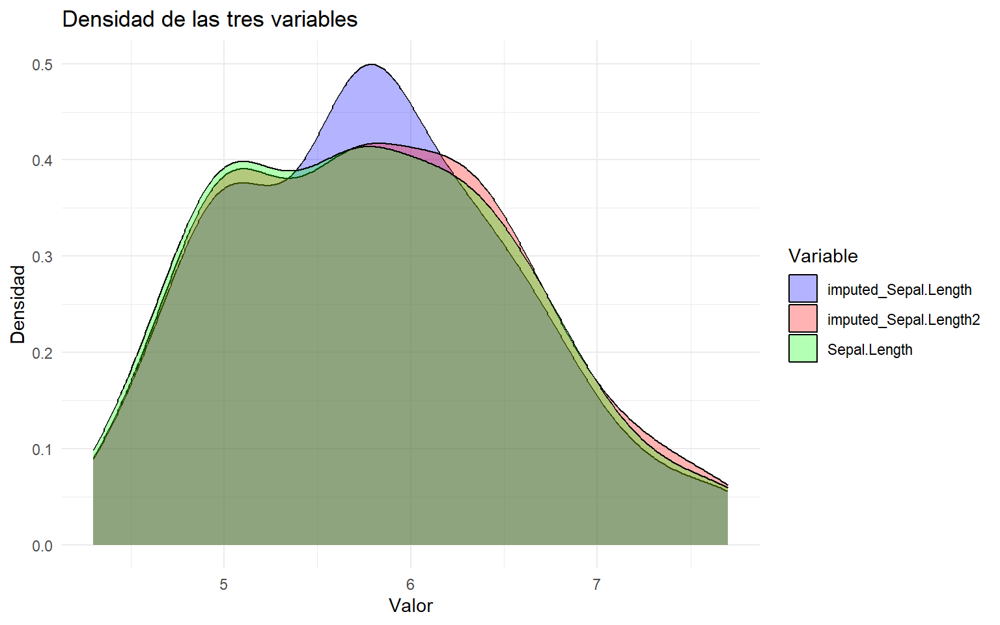
# Eliminamos las variables auxiliares para no contaminar el dataframe original.iris.mis[, c("imputed_Sepal.Length", "imputed_Sepal.Length2")] <-NULL
6.2 Imputación con aregImpute
aregImpute implementa una imputación basada en modelos aditivos flexibles y múltiples simulaciones. Aquí se aplica sobre todas las variables del dataset.
# ------------------------------------------------------------------------------# using argImpute# Ajustamos el modelo de imputación.# n.impute = 5 indica que se generan 5 imputaciones para los valores ausentes.impute_arg <-aregImpute(~ Sepal.Length + Sepal.Width + Petal.Length + Petal.Width + Species,data = iris.mis,n.impute =5)
# Mostramos el objeto resultante para inspeccionar la imputación.impute_arg
Multiple Imputation using Bootstrap and PMM
aregImpute(formula = ~Sepal.Length + Sepal.Width + Petal.Length +
Petal.Width + Species, data = iris.mis, n.impute = 5)
n: 150 p: 5 Imputations: 5 nk: 3
Number of NAs:
Sepal.Length Sepal.Width Petal.Length Petal.Width Species
11 17 13 15 19
type d.f.
Sepal.Length s 2
Sepal.Width s 2
Petal.Length s 2
Petal.Width s 2
Species c 2
Transformation of Target Variables Forced to be Linear
R-squares for Predicting Non-Missing Values for Each Variable
Using Last Imputations of Predictors
Sepal.Length Sepal.Width Petal.Length Petal.Width Species
0.855 0.621 0.979 0.962 0.989
# Revisamos específicamente las imputaciones generadas para Sepal.Length.impute_arg$imputed$Sepal.Length
# Calculamos la media de las 5 imputaciones para cada observación ausente.imputed_Sepal.Length <-rowMeans(impute_arg$imputed$Sepal.Length)# Creamos una nueva variable partiendo de la variable real original.new_var_imputed <- iris$Sepal.Length# Sustituimos únicamente las posiciones que tenían NA por la media imputada.new_var_imputed[as.numeric(names(imputed_Sepal.Length))] <- imputed_Sepal.Length# Comparamos la distribución real frente a la imputada.newBD <-data.frame(real = iris[, "Sepal.Length"], imputed = new_var_imputed)df_long <- newBD %>%pivot_longer(cols =everything(), names_to ="Variable", values_to ="Valor")ggplot(df_long, aes(x = Valor, fill = Variable)) +geom_density(alpha =0.3) +labs(title ="Densidad de las dos variables",x ="Valor",y ="Densidad" ) +theme_minimal() +scale_fill_manual(values =c("blue", "red"))
Este bloque usa el paquete mi, que implementa imputación múltiple mediante aproximaciones iterativas basadas en modelos probabilísticos.
# 1.1.1 Multiple Iterative Regression Imputation (MI method) -------------------# Ejecutamos la imputación múltiple con una semilla fija para garantizar# reproducibilidad.mi_data <-mi(iris.mis, seed =335)# Resumen del modelo de imputación.summary(mi_data)
$Sepal.Length
$Sepal.Length$is_missing
missing
FALSE TRUE
139 11
$Sepal.Length$imputed
Min. 1st Qu. Median Mean 3rd Qu. Max.
-0.8313 -0.1808 0.3217 0.2455 0.6659 1.3929
$Sepal.Length$observed
Min. 1st Qu. Median Mean 3rd Qu. Max.
-0.92667 -0.43102 -0.05928 0.00000 0.37441 1.17984
$Sepal.Width
$Sepal.Width$is_missing
missing
FALSE TRUE
133 17
$Sepal.Width$imputed
Min. 1st Qu. Median Mean 3rd Qu. Max.
-0.91754 -0.32512 0.05625 0.03350 0.40277 0.99748
$Sepal.Width$observed
Min. 1st Qu. Median Mean 3rd Qu. Max.
-1.1920 -0.2963 -0.0724 0.0000 0.3755 1.4951
$Petal.Length
$Petal.Length$is_missing
missing
FALSE TRUE
137 13
$Petal.Length$imputed
Min. 1st Qu. Median Mean 3rd Qu. Max.
-0.77755 -0.50058 0.27530 0.08156 0.43277 0.90765
$Petal.Length$observed
Min. 1st Qu. Median Mean 3rd Qu. Max.
-0.7797 -0.6081 0.1643 0.0000 0.3932 0.9081
$Petal.Width
$Petal.Width$is_missing
missing
FALSE TRUE
135 15
$Petal.Width$imputed
Min. 1st Qu. Median Mean 3rd Qu. Max.
-0.8516 -0.1801 0.1935 0.1346 0.5115 0.8273
$Petal.Width$observed
Min. 1st Qu. Median Mean 3rd Qu. Max.
-0.70623 -0.57400 0.08718 0.00000 0.41776 0.88058
$Species
$Species$crosstab
observed imputed
setosa 176 27
versicolor 180 22
virginica 168 27
# Gráficos diagnósticos del proceso de imputación.plot(mi_data)
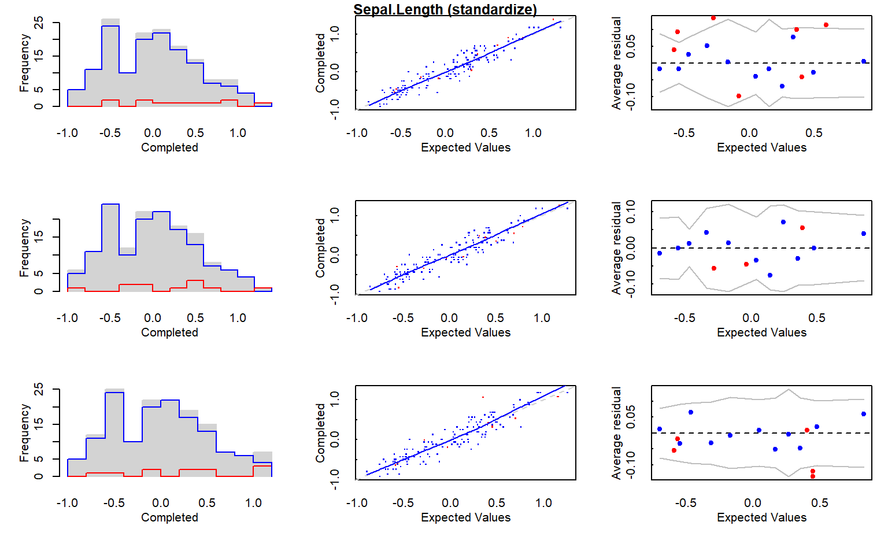
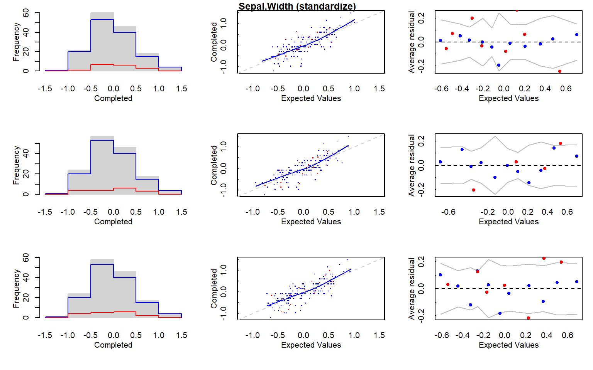
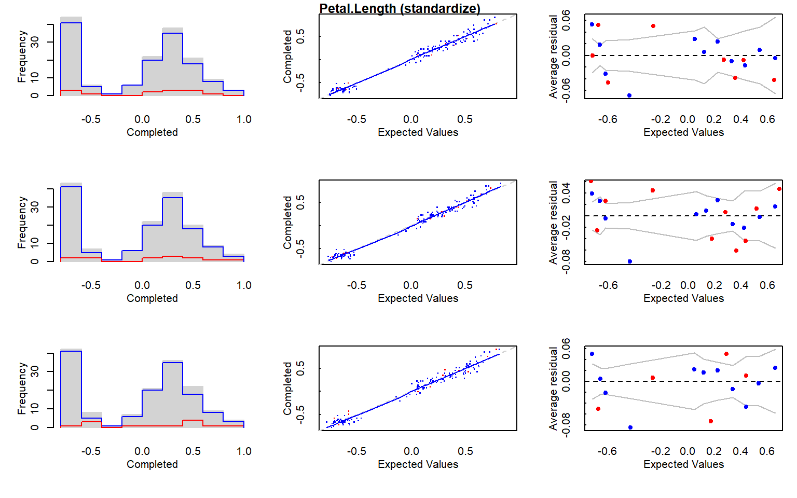
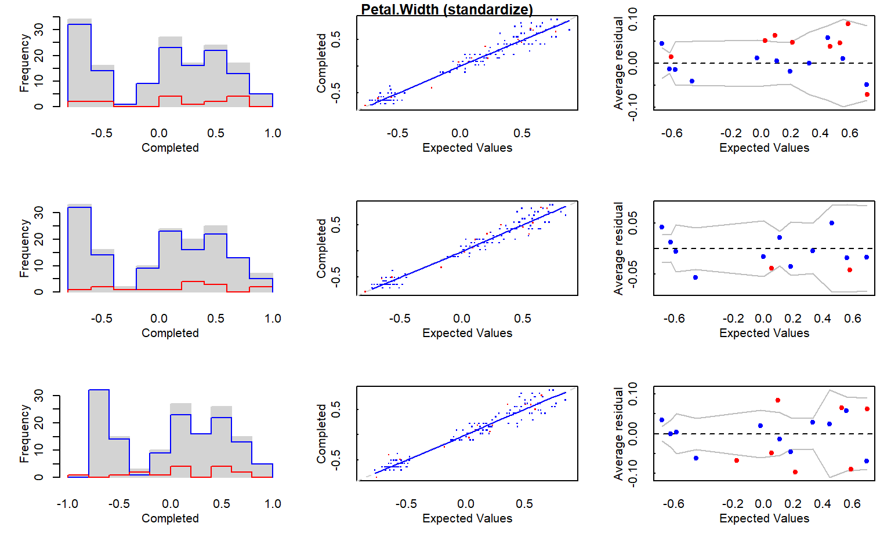
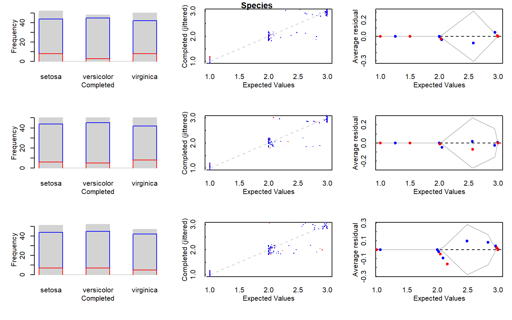
# Evitamos que R pregunte entre gráficos cuando hay múltiples paneles.par(ask =FALSE)# Revisamos la estructura interna del objeto de imputación.mi_data@data
$`chain:1`
Object of class missing_data.frame with 150 observations on 5 variables
There are 14 missing data patterns
Append '@patterns' to this missing_data.frame to access the corresponding pattern for every observation or perhaps use table()
type missing method model
Sepal.Length continuous 11 ppd linear
Sepal.Width continuous 17 ppd linear
Petal.Length continuous 13 ppd linear
Petal.Width continuous 15 ppd linear
Species unordered-categorical 19 ppd mlogit
family link transformation
Sepal.Length gaussian identity standardize
Sepal.Width gaussian identity standardize
Petal.Length gaussian identity standardize
Petal.Width gaussian identity standardize
Species multinomial logit <NA>
$`chain:2`
Object of class missing_data.frame with 150 observations on 5 variables
There are 14 missing data patterns
Append '@patterns' to this missing_data.frame to access the corresponding pattern for every observation or perhaps use table()
type missing method model
Sepal.Length continuous 11 ppd linear
Sepal.Width continuous 17 ppd linear
Petal.Length continuous 13 ppd linear
Petal.Width continuous 15 ppd linear
Species unordered-categorical 19 ppd mlogit
family link transformation
Sepal.Length gaussian identity standardize
Sepal.Width gaussian identity standardize
Petal.Length gaussian identity standardize
Petal.Width gaussian identity standardize
Species multinomial logit <NA>
$`chain:3`
Object of class missing_data.frame with 150 observations on 5 variables
There are 14 missing data patterns
Append '@patterns' to this missing_data.frame to access the corresponding pattern for every observation or perhaps use table()
type missing method model
Sepal.Length continuous 11 ppd linear
Sepal.Width continuous 17 ppd linear
Petal.Length continuous 13 ppd linear
Petal.Width continuous 15 ppd linear
Species unordered-categorical 19 ppd mlogit
family link transformation
Sepal.Length gaussian identity standardize
Sepal.Width gaussian identity standardize
Petal.Length gaussian identity standardize
Petal.Width gaussian identity standardize
Species multinomial logit <NA>
$`chain:4`
Object of class missing_data.frame with 150 observations on 5 variables
There are 14 missing data patterns
Append '@patterns' to this missing_data.frame to access the corresponding pattern for every observation or perhaps use table()
type missing method model
Sepal.Length continuous 11 ppd linear
Sepal.Width continuous 17 ppd linear
Petal.Length continuous 13 ppd linear
Petal.Width continuous 15 ppd linear
Species unordered-categorical 19 ppd mlogit
family link transformation
Sepal.Length gaussian identity standardize
Sepal.Width gaussian identity standardize
Petal.Length gaussian identity standardize
Petal.Width gaussian identity standardize
Species multinomial logit <NA>
8 1.1.2 Media condicionada por variable objetivo
Aquí se aplica una estrategia simple pero útil en docencia: imputar con la media del grupo, definida por una variable objetivo o categórica, en este caso Species.
# 1.1.2 MEAN WITH TARGET VARS --------------------------------------------------# Definimos la variable objetivo o de agrupación.target <-"Species"# Construimos un dataset sin la variable target para introducir NA únicamente# en las variables predictoras.data <-subset(iris, select =-c(get(target)))# Generamos valores ausentes de forma artificial.data <-prodNA(data, noNA =0.1)# Recuperamos la variable target original.data$Species <- iris[, target]# Identificamos qué variables debemos imputar: todas excepto la target.varImp <-colnames(data)[which(!colnames(data) %in% target)]# Calculamos la media de cada variable numérica dentro de cada grupo de Species.means <-aggregate(data[, varImp], list(data[, target]), mean, na.rm =TRUE)# Imputamos los valores ausentes usando la media de su grupo.for (c in varImp) {for (g in means[, "Group.1"]) {# Condición lógica: filas que pertenecen al grupo g. cond <- data[, target] == g# Detectamos los NA de la variable c dentro de ese grupo. na_index <-is.na(data[, c]) & cond# Sustituimos cada NA por la media del grupo correspondiente. data[na_index, c] <- means[means[, "Group.1"] == g, c] }}# Resumen del dataset imputado.summary(data)
Sepal.Length Sepal.Width Petal.Length Petal.Width
Min. :4.300 Min. :2.000 Min. :1.000 Min. :0.100
1st Qu.:5.100 1st Qu.:2.800 1st Qu.:1.500 1st Qu.:0.300
Median :5.900 Median :3.000 Median :4.270 Median :1.326
Mean :5.862 Mean :3.071 Mean :3.756 Mean :1.201
3rd Qu.:6.400 3rd Qu.:3.400 3rd Qu.:5.100 3rd Qu.:1.800
Max. :7.900 Max. :4.400 Max. :6.900 Max. :2.500
Species
setosa :50
versicolor:50
virginica :50
8.1 Comparación visual entre original e imputado
# Marcamos el origen de cada dataset para poder compararlos visualmente.iris[, "Tipo"] <-"original"data[, "Tipo"] <-"imputed"# Fusionamos ambos dataframes en uno solo.data_long <-bind_rows(iris, data)# Seleccionamos únicamente las variables numéricas para representar densidades.cols_numeric <-names(data_long)[sapply(data_long, is.numeric) &names(data_long) !="Tipo"]# Pasamos a formato largo para facetar un gráfico por variable.data_long <- data_long %>%pivot_longer(cols =all_of(cols_numeric), names_to ="Variable", values_to ="Valor")# Representamos la comparación de distribuciones por variable.ggplot(data_long, aes(x = Valor, fill = Tipo)) +geom_density(alpha =0.3) +facet_wrap(~Variable, scales ="free") +labs(title ="Comparación de Distribuciones: Original vs Imputado",x ="Valor",y ="Densidad" ) +theme_minimal() +scale_fill_manual(values =c("blue", "red"))
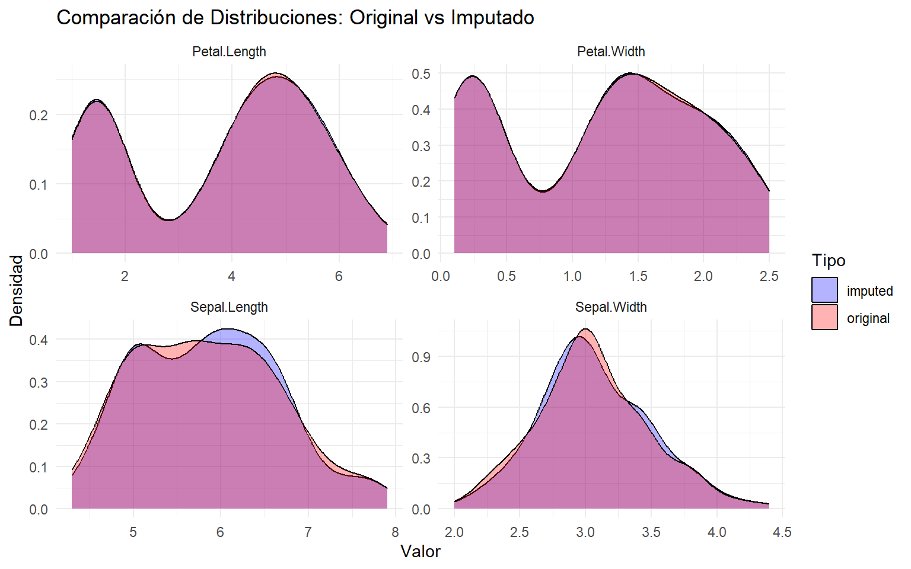
# Nota docente:# En el script original aparece esta línea:# iris.mis[, "Tipo"] <- NULL# Sin embargo, la columna Tipo se añadió a iris y data, no a iris.mis.# Por coherencia, eliminamos la columna Tipo del dataset iris original.iris[, "Tipo"] <-NULL
9 1.2 Multiple Imputation by Chained Equations (MICE)
MICE es uno de los métodos más utilizados en estadística aplicada para imputación múltiple. La idea es modelar cada variable con missingness condicionalmente al resto de variables.
# 1.2 Multiple Imputation by Chained Equations (MICE) ==========================# https://amices.org/mice/# Eliminamos variables categóricas para quedarnos únicamente con variables# numéricas en este ejemplo concreto.quiCat <-which(sapply(iris.mis, class) %in%c("character", "factor"))categories <-names(iris.mis)[quiCat]iris.mis2 <-subset(iris.mis, select =-c(get(categories)))# Mostramos un resumen del dataset resultante.summary(iris.mis2)
Sepal.Length Sepal.Width Petal.Length Petal.Width
Min. :4.300 Min. :2.000 Min. :1.000 Min. :0.100
1st Qu.:5.100 1st Qu.:2.800 1st Qu.:1.600 1st Qu.:0.300
Median :5.700 Median :3.000 Median :4.300 Median :1.300
Mean :5.796 Mean :3.065 Mean :3.726 Mean :1.168
3rd Qu.:6.350 3rd Qu.:3.400 3rd Qu.:5.100 3rd Qu.:1.800
Max. :7.700 Max. :4.400 Max. :6.900 Max. :2.500
NA's :11 NA's :17 NA's :13 NA's :15
# Visualizamos el patrón de datos ausentes.par(mfrow =c(1, 1))md.pattern(iris.mis2, rotate.names =TRUE)
# Look the NA's with VIM packagesmice_plot <-aggr( iris.mis2,col =c("navyblue", "yellow"),numbers =TRUE,sortVars =TRUE,labels =names(iris.mis),cex.axis = .7,gap =3,ylab =c("Missing data", "Pattern"))
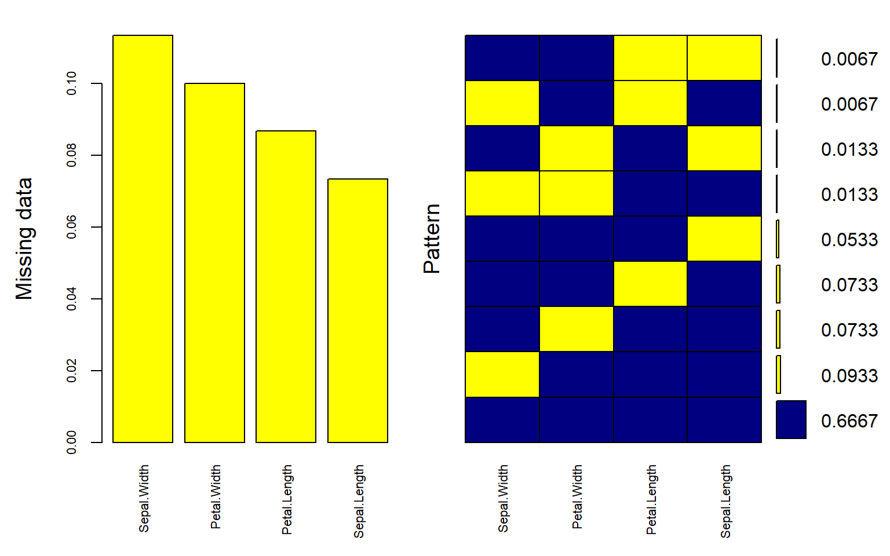
Variables sorted by number of missings:
Variable Count
Sepal.Width 0.11333333
Petal.Width 0.10000000
Petal.Length 0.08666667
Sepal.Length 0.07333333
9.2 Ejecución de MICE
# Multiple impute the missing values.# m = 5 indica que generamos 5 datasets imputados.# maxit = 50 fija el número máximo de iteraciones.# method = 'pmm' usa Predictive Mean Matching.imputed_Data <-mice(iris.mis2, m =5, maxit =50, method ="pmm", seed =500)
# Inspección visual de la calidad de imputación para Sepal.Width.stripplot(imputed_Data, Sepal.Width, pch =19, xlab ="Imputation number")
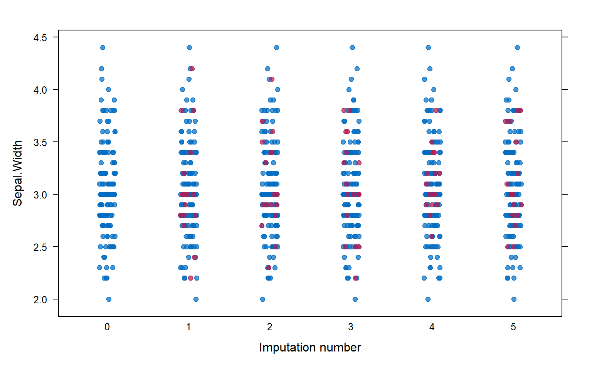
# Valores imputados específicamente en Sepal.Width.imputed_Data$imp$Sepal.Width
# Recuperamos los datos completos en formato largo.completeData <- mice::complete(imputed_Data, action ="long")# Mostramos las primeras filas como inspección rápida.head(completeData)
9.3 Ejercicio propuesto
Desplegar una visualización múltiple que compare, para todas las variables numéricas del dataframe, la distribución original frente a la distribución imputada.
10 1.3 KNN
El método KNN imputa los valores faltantes utilizando observaciones cercanas en el espacio de variables. Es una técnica sencilla y efectiva cuando existe una estructura local útil en los datos.
# 1.3 KNN =====================================================================# Identificamos el tipo de cada variable.tipos <-sapply(iris.mis, class)# Seleccionamos únicamente variables numéricas e integer.varNum <-names(tipos)[which(tipos %in%c("numeric", "integer"))]# Aplicamos imputación KNN con k = 1.# Es decir, cada valor ausente se imputará usando su vecino más cercano.preProcValues <- caret::preProcess(iris.mis[, varNum], method ="knnImpute", k =1) data_knn_imputation <-predict(preProcValues, iris.mis)# Resumen del dataset imputado.summary(data_knn_imputation)
Sepal.Length Sepal.Width Petal.Length
Min. :-1.853335 Min. :-2.384e+00 Min. :-1.559403
1st Qu.:-0.862037 1st Qu.:-5.927e-01 1st Qu.:-1.259028
Median : 0.005349 Median :-1.448e-01 Median : 0.385883
Mean : 0.042522 Mean : 1.122e-05 Mean : 0.007888
3rd Qu.: 0.748822 3rd Qu.: 6.949e-01 3rd Qu.: 0.786383
Max. : 2.359682 Max. : 2.990e+00 Max. : 1.816241
Petal.Width Species
Min. :-1.41246 setosa :44
1st Qu.:-1.14799 versicolor:45
Median : 0.17435 virginica :42
Mean : 0.03771 NA's :19
3rd Qu.: 0.83553
Max. : 1.76117
# Otra forma seria utilizando el paquete VIM data_knn_imputation <- VIM::kNN(iris.mis[, varNum], k =1)
# Resumen del dataset imputado.summary(data_knn_imputation)
Sepal.Length Sepal.Width Petal.Length Petal.Width
Min. :4.300 Min. :2.000 Min. :1.000 Min. :0.100
1st Qu.:5.100 1st Qu.:2.800 1st Qu.:1.525 1st Qu.:0.300
Median :5.800 Median :3.000 Median :4.400 Median :1.300
Mean :5.825 Mean :3.059 Mean :3.735 Mean :1.191
3rd Qu.:6.400 3rd Qu.:3.300 3rd Qu.:5.100 3rd Qu.:1.800
Max. :7.700 Max. :4.400 Max. :6.900 Max. :2.500
Sepal.Length_imp Sepal.Width_imp Petal.Length_imp Petal.Width_imp
Mode :logical Mode :logical Mode :logical Mode :logical
FALSE:139 FALSE:133 FALSE:137 FALSE:135
TRUE :11 TRUE :17 TRUE :13 TRUE :15
10.1 Comparación visual con los datos reales
# Comparamos la variable Sepal.Length real frente a la imputada por KNN.newBD <-data.frame(real = iris[, "Sepal.Length"],imputed = data_knn_imputation[, "Sepal.Length"])# Reorganizamos a formato largo para representar densidades.df_long <- newBD %>%pivot_longer(cols =everything(), names_to ="Variable", values_to ="Valor")# Dibujamos la comparación de distribuciones.ggplot(df_long, aes(x = Valor, fill = Variable)) +geom_density(alpha =0.3) +labs(title ="Densidad de las dos variables",x ="Valor",y ="Densidad" ) +theme_minimal() +scale_fill_manual(values =c("blue", "red"))
10.2 Ejercicio propuesto
Desplegar una visualización múltiple que compare la imputación y los datos originales en todas las variables numéricas del dataframe.
11 1.4 missForest
missForest es un método robusto y muy utilizado cuando hay relaciones no lineales y combinaciones de variables numéricas y categóricas. Se basa en bosques aleatorios.
# 1.4 missForest ===============================================================# Imputamos los valores ausentes usando los parámetros por defecto.# variablewise = TRUE devuelve el error por variable.# verbose = TRUE muestra el progreso por consola.iris.imp <-missForest(iris.mis, variablewise =TRUE, verbose =TRUE)
# Interpretación docente:# - NRMSE (Normalized Root Mean Squared Error) se usa para variables continuas.# - PFC (Proportion of Falsely Classified) se usa para variables categóricas.
11.1 Comparación contra los datos reales
# Calculamos el error comparando:# - los datos imputados,# - el dataset con missing,# - y los datos originales completos.iris.err <-mixError(iris.imp$ximp, iris.mis, iris)iris.err
NRMSE PFC
0.1758295 0.0000000
# Comparamos visualmente Sepal.Length real frente a la imputada por missForest.newBD <-data.frame(real = iris[, "Sepal.Length"],imputed = iris.imp$ximp[, "Sepal.Length"])# Formato largo para la representación.df_long <- newBD %>%pivot_longer(cols =everything(), names_to ="Variable", values_to ="Valor")# Gráfico de densidades comparadas.ggplot(df_long, aes(x = Valor, fill = Variable)) +geom_density(alpha =0.3) +labs(title ="Densidad de las dos variables",x ="Valor",y ="Densidad" ) +theme_minimal() +scale_fill_manual(values =c("blue", "red"))
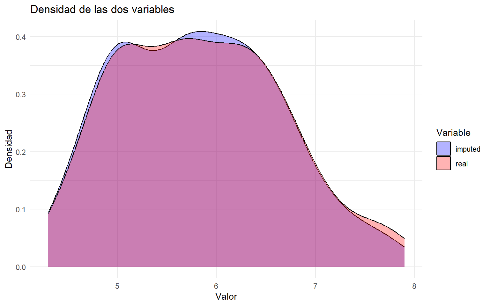
11.2 Ejercicio propuesto
Desplegar una visualización múltiple que compare la imputación y los datos originales en todas las variables numéricas del dataframe.
12 Extras
Cuando se trabaja con valores faltantes, en muchas ocasiones el problema no es solamente imputar, sino también detectar valores especiales que en realidad deberían considerarse NA.
Por ejemplo, en algunas bases de datos aparecen códigos como:
-99
-1
"N/A"
"Not Available"
que semánticamente representan ausencia de información.
# ==============================================================================# Extras:# When you are dealing with missing values, you might want to replace values with# a missing values (NA). This is useful in cases when you know the origin of the# data and can be certain which values should be missing. For example, you might# know that all values of “N/A”, “N A”, and “Not Available”, or -99, or -1 are# supposed to be missing.## naniar provides functions to specifically work on this type of problem using# the function replace_with_na. This function is the compliment to tidyr::replace_na,# which replaces an NA value with a specified value, whereas naniar::replace_with_na# replaces a value with an NA:## tidyr::replace_na: Missing values turns into a value (NA -> -99)# naniar::replace_with_na: Value becomes a missing value (-99 -> NA)
12.1 Ejemplo conceptual
# Ejemplo opcional de uso:# Supongamos que en una variable el valor -99 significa realmente "dato no disponible".df_example <-data.frame(x =c(1, 2, -99, 4, -99, 6))# Reemplazamos el código -99 por NA real.df_example_na <- naniar::replace_with_na(df_example, replace =list(x =-99))df_example
df_example_na
13 Conclusiones docentes
A nivel pedagógico, este guion permite mostrar una progresión natural:
Generar y detectar missingness.
Visualizar patrones de ausencia.
Aplicar imputaciones simples como referencia.
Evolucionar hacia métodos más robustos como MICE, KNN y missForest.
Comparar distribuciones para evaluar si la imputación distorsiona o preserva la estructura de los datos.
En términos metodológicos:
las imputaciones por media son fáciles de explicar pero pueden sesgar la varianza,
las imputaciones condicionadas por grupo introducen estructura supervisada útil,
MICE ofrece una aproximación estadísticamente sólida,
KNN aprovecha vecindad local,
missForest suele rendir muy bien cuando hay no linealidades y mixtura de tipos.
Aquesta web està creada por Dante Conti y Sergi Ramírez, (c) 2026
Ejecutar el código
---title: "Preprocessing: Imputación de datos faltantes"subtitle: "Material docente en Quarto a partir del script original"author: - "Sergi Ramírez" - "Dante Conti"format: html: theme: cosmo toc: true toc-depth: 3 number-sections: true code-fold: false code-tools: true df-print: paged fig-width: 8 fig-height: 5execute: echo: true warning: false message: false cache: falselang: eseditor: visual---# IntroducciónEste documento docente presenta, de forma estructurada y comentada, distintos métodos de **imputación de datos faltantes** en R.Se ha respetado al máximo la organización del script original, incorporando:- explicación conceptual antes de cada bloque,- comentarios detallados dentro del código,- separación por apartados para facilitar la docencia,- y una estructura adecuada para usar directamente en **Quarto**.## Objetivos docentesAl finalizar este material, el estudiante debería poder:1. generar artificialmente valores perdidos,2. explorar patrones de missingness,3. distinguir entre técnicas básicas y avanzadas de imputación,4. aplicar métodos como **media**, **aregImpute**, **MI**, **MICE**, **KNN** y **missForest**,5. comparar distribuciones originales e imputadas.------------------------------------------------------------------------# Carga de libreríasEn este primer bloque cargamos todos los paquetes necesarios para trabajar con visualización, exploración de valores perdidos e imputación.```{r}# Carreguem les llibreries =====================================================# Vector con los paquetes que vamos a necesitar durante toda la práctica.# Incluye paquetes para:# - visualización (ggplot2, plotly, visdata, VIM)# - manipulación de datos (dplyr, tidyverse)# - análisis de missingness (naniar, mi)# - imputación (Hmisc, mice, DMwR, missForest)list.of.packages <-c("ggplot2", "plotly", "dplyr", "tidyverse", "naniar","mi", "Hmisc", "mice", "pool", "VIM", "missForest", "RANN", "caret")# Detectamos qué paquetes no están instalados en el sistema.new.packages <- list.of.packages[!(list.of.packages %in%installed.packages()[, "Package"])]# Si falta alguno, lo instalamos automáticamente.if (length(new.packages) >0) {install.packages(new.packages)}# Cargamos todos los paquetes en memoria.lapply(list.of.packages, require, character.only =TRUE)# Limpiamos objetos auxiliares que ya no necesitamos y lanzamos el recolector# de basura para liberar memoria.rm(list.of.packages, new.packages)gc()```------------------------------------------------------------------------# Generación de datos con valores perdidosPara practicar métodos de imputación, primero generamos una versión incompleta del conjunto de datos `iris`, introduciendo un 10% de valores ausentes de forma artificial.```{r}# Generate data with NA's ======================================================# Generamos una copia del dataset iris con aproximadamente un 10% de valores NA.# La función prodNA del paquete missForest introduce missing values de forma# artificial para que podamos practicar imputación.iris.mis <- missForest::prodNA(iris, noNA =0.1)# Otras formas de crear valores ausentes artificialmente en un dataframe:# iris.mis <- mi::create.missing(iris, pct.mis = 10)# Mostramos un resumen básico del dataset con NA para inspeccionar su estructura.summary(iris.mis)```------------------------------------------------------------------------# Little TestUna cuestión importante en datos faltantes es entender si los NA aparecen completamente al azar o siguen algún patrón. Para ello usamos el test MCAR.```{r}# Little Test ==================================================================# Aplicamos el test MCAR (Missing Completely At Random).# Este contraste ayuda a evaluar si los datos faltantes se generan de manera# completamente aleatoria.naniar::mcar_test(iris.mis)# Interpretación conceptual:# - Si el p-valor es pequeño, rechazamos que los missing sean completamente aleatorios.# - Si el p-valor no es pequeño, no tenemos evidencia para rechazar MCAR.# Nota importante docente:# En el script original aparece el comentario:# "If the test p-value is less than 0 this means..."# Lo correcto estadísticamente sería hablar de un p-valor bajo, por ejemplo < 0.05.```------------------------------------------------------------------------# Patrones descriptivos de valores perdidos en una base de datosAntes de imputar, conviene **visualizar** y **describir** los patrones de ausencia. Esto ayuda a detectar si hay variables particularmente afectadas o relaciones entre missingness y otras variables.## Exploración visual de missingness```{r}# Descriptive NA's patterns in a databases =====================================# Cargamos explícitamente visdat para sus funciones de visualización.library(visdat)# Visualizamos el tipo de dato y la presencia de NA en airquality.vis_dat(airquality)# Visualizamos el tipo de dato y la presencia de NA en iris.mis.vis_dat(iris.mis)# Representación específica de valores perdidos en airquality.vis_miss(airquality)# Representación específica de valores perdidos en iris.mis.vis_miss(iris.mis)```## Relación entre valores perdidos y variables numéricas```{r}# Gráfico básico de dispersión sin destacar missingness.ggplot(airquality, aes(x = Solar.R, y = Ozone)) +geom_point()# Gráfico de dispersión destacando las observaciones con missingness.ggplot(airquality, aes(x = Solar.R, y = Ozone)) +geom_miss_point()# Añadimos facetado por mes para observar si el patrón de NA cambia según el mes.ggplot(airquality, aes(x = Solar.R, y = Ozone)) +geom_miss_point() +facet_wrap(~Month)# Mismo gráfico anterior pero con tema oscuro para enfatizar la visualización.ggplot(airquality, aes(x = Solar.R, y = Ozone)) +geom_miss_point() +facet_wrap(~Month) +theme_dark()```## Visualización del número de missings por variable```{r}# Visualizamos cuántos NA tiene cada variable.gg_miss_var(airquality) +labs(y ="Look at all the missing ones")```## Sombra de missingness y resumen por grupos```{r}# Detect NA in Dataframe =======================================================# Creamos un shadow matrix: añade variables auxiliares con sufijo _NA que indican# si el valor original era NA o no.aq_shadow <-bind_shadow(airquality)# Calculamos estadísticas descriptivas de Solar.R separando los registros según# si Ozone es NA o no.airquality %>%bind_shadow() %>%group_by(Ozone_NA) %>%summarise_at(.vars ="Solar.R",.funs =c("mean", "sd", "var", "min", "max"),na.rm =TRUE )# Representamos la distribución de la temperatura diferenciando los casos en los# que Ozone está ausente de aquellos en los que no lo está.ggplot(aq_shadow, aes(x = Temp, colour = Ozone_NA)) +geom_density()```## Estadísticos de missingness```{r}# Extract statistics with NAs in Data Frame ====================================# Proporción de casos (filas) que contienen algún NA.prop_miss_case(airquality)# Porcentaje de casos con NA.pct_miss_case(airquality)# Resumen por fila del patrón de missingness.miss_case_summary(airquality)# Tabla de frecuencia del número de missings por fila.miss_case_table(airquality)# Proporción de missings por variable.prop_miss_var(airquality)# Porcentaje de missings por variable.pct_miss_var(airquality)# Resumen de missingness por variable.miss_var_summary(airquality)# Tabla de frecuencia de missings por variable.miss_var_table(airquality)```------------------------------------------------------------------------# 1.1 Imputación básicaEn este apartado se ilustran técnicas sencillas de imputación, útiles para comprender la lógica general aunque normalmente insuficientes en contextos reales complejos.## Imputación con la media y con valores aleatorios```{r}# 1.1 Basic Imputation ========================================================# Imputamos los NA de Sepal.Length usando la media de la variable.# La función impute del paquete Hmisc devuelve una versión imputada de la variable.iris.mis[, "imputed_Sepal.Length"] <-with(iris.mis, impute(Sepal.Length, mean))# Imputamos los NA de Sepal.Length usando valores aleatorios observados.iris.mis[, "imputed_Sepal.Length2"] <-with(iris.mis, impute(Sepal.Length, "random"))# Nota docente:# De forma análoga se podrían usar estrategias como min, max o median.# Reestructuramos los datos a formato largo para comparar distribuciones.df_long <- iris.mis %>%select(Sepal.Length, imputed_Sepal.Length, imputed_Sepal.Length2) %>%pivot_longer(cols =everything(), names_to ="Variable", values_to ="Valor")# Representamos la densidad de la variable original y de las variables imputadas.ggplot(df_long, aes(x = Valor, fill = Variable)) +geom_density(alpha =0.3) +labs(title ="Densidad de las tres variables",x ="Valor",y ="Densidad" ) +theme_minimal() +scale_fill_manual(values =c("blue", "red", "green"))# Eliminamos las variables auxiliares para no contaminar el dataframe original.iris.mis[, c("imputed_Sepal.Length", "imputed_Sepal.Length2")] <-NULL```## Imputación con `aregImpute``aregImpute` implementa una imputación basada en modelos aditivos flexibles y múltiples simulaciones. Aquí se aplica sobre todas las variables del dataset.```{r}# ------------------------------------------------------------------------------# using argImpute# Ajustamos el modelo de imputación.# n.impute = 5 indica que se generan 5 imputaciones para los valores ausentes.impute_arg <-aregImpute(~ Sepal.Length + Sepal.Width + Petal.Length + Petal.Width + Species,data = iris.mis,n.impute =5)# Mostramos el objeto resultante para inspeccionar la imputación.impute_arg# Revisamos específicamente las imputaciones generadas para Sepal.Length.impute_arg$imputed$Sepal.Length# Calculamos la media de las 5 imputaciones para cada observación ausente.imputed_Sepal.Length <-rowMeans(impute_arg$imputed$Sepal.Length)# Creamos una nueva variable partiendo de la variable real original.new_var_imputed <- iris$Sepal.Length# Sustituimos únicamente las posiciones que tenían NA por la media imputada.new_var_imputed[as.numeric(names(imputed_Sepal.Length))] <- imputed_Sepal.Length# Comparamos la distribución real frente a la imputada.newBD <-data.frame(real = iris[, "Sepal.Length"], imputed = new_var_imputed)df_long <- newBD %>%pivot_longer(cols =everything(), names_to ="Variable", values_to ="Valor")ggplot(df_long, aes(x = Valor, fill = Variable)) +geom_density(alpha =0.3) +labs(title ="Densidad de las dos variables",x ="Valor",y ="Densidad" ) +theme_minimal() +scale_fill_manual(values =c("blue", "red"))```------------------------------------------------------------------------# 1.1.1 Multiple Iterative Regression Imputation (MI method)Este bloque usa el paquete `mi`, que implementa imputación múltiple mediante aproximaciones iterativas basadas en modelos probabilísticos.```{r}# 1.1.1 Multiple Iterative Regression Imputation (MI method) -------------------# Ejecutamos la imputación múltiple con una semilla fija para garantizar# reproducibilidad.mi_data <-mi(iris.mis, seed =335)# Resumen del modelo de imputación.summary(mi_data)# Gráficos diagnósticos del proceso de imputación.plot(mi_data)# Evitamos que R pregunte entre gráficos cuando hay múltiples paneles.par(ask =FALSE)# Revisamos la estructura interna del objeto de imputación.mi_data@data```------------------------------------------------------------------------# 1.1.2 Media condicionada por variable objetivoAquí se aplica una estrategia simple pero útil en docencia: imputar con la **media del grupo**, definida por una variable objetivo o categórica, en este caso `Species`.```{r}# 1.1.2 MEAN WITH TARGET VARS --------------------------------------------------# Definimos la variable objetivo o de agrupación.target <-"Species"# Construimos un dataset sin la variable target para introducir NA únicamente# en las variables predictoras.data <-subset(iris, select =-c(get(target)))# Generamos valores ausentes de forma artificial.data <-prodNA(data, noNA =0.1)# Recuperamos la variable target original.data$Species <- iris[, target]# Identificamos qué variables debemos imputar: todas excepto la target.varImp <-colnames(data)[which(!colnames(data) %in% target)]# Calculamos la media de cada variable numérica dentro de cada grupo de Species.means <-aggregate(data[, varImp], list(data[, target]), mean, na.rm =TRUE)# Imputamos los valores ausentes usando la media de su grupo.for (c in varImp) {for (g in means[, "Group.1"]) {# Condición lógica: filas que pertenecen al grupo g. cond <- data[, target] == g# Detectamos los NA de la variable c dentro de ese grupo. na_index <-is.na(data[, c]) & cond# Sustituimos cada NA por la media del grupo correspondiente. data[na_index, c] <- means[means[, "Group.1"] == g, c] }}# Resumen del dataset imputado.summary(data)```## Comparación visual entre original e imputado```{r}# Marcamos el origen de cada dataset para poder compararlos visualmente.iris[, "Tipo"] <-"original"data[, "Tipo"] <-"imputed"# Fusionamos ambos dataframes en uno solo.data_long <-bind_rows(iris, data)# Seleccionamos únicamente las variables numéricas para representar densidades.cols_numeric <-names(data_long)[sapply(data_long, is.numeric) &names(data_long) !="Tipo"]# Pasamos a formato largo para facetar un gráfico por variable.data_long <- data_long %>%pivot_longer(cols =all_of(cols_numeric), names_to ="Variable", values_to ="Valor")# Representamos la comparación de distribuciones por variable.ggplot(data_long, aes(x = Valor, fill = Tipo)) +geom_density(alpha =0.3) +facet_wrap(~Variable, scales ="free") +labs(title ="Comparación de Distribuciones: Original vs Imputado",x ="Valor",y ="Densidad" ) +theme_minimal() +scale_fill_manual(values =c("blue", "red"))# Nota docente:# En el script original aparece esta línea:# iris.mis[, "Tipo"] <- NULL# Sin embargo, la columna Tipo se añadió a iris y data, no a iris.mis.# Por coherencia, eliminamos la columna Tipo del dataset iris original.iris[, "Tipo"] <-NULL```------------------------------------------------------------------------# 1.2 Multiple Imputation by Chained Equations (MICE)MICE es uno de los métodos más utilizados en estadística aplicada para imputación múltiple. La idea es modelar cada variable con missingness condicionalmente al resto de variables.```{r}# 1.2 Multiple Imputation by Chained Equations (MICE) ==========================# https://amices.org/mice/# Eliminamos variables categóricas para quedarnos únicamente con variables# numéricas en este ejemplo concreto.quiCat <-which(sapply(iris.mis, class) %in%c("character", "factor"))categories <-names(iris.mis)[quiCat]iris.mis2 <-subset(iris.mis, select =-c(get(categories)))# Mostramos un resumen del dataset resultante.summary(iris.mis2)# Visualizamos el patrón de datos ausentes.par(mfrow =c(1, 1))md.pattern(iris.mis2, rotate.names =TRUE)```## Visualización del patrón con VIM```{r}# Look the NA's with VIM packagesmice_plot <-aggr( iris.mis2,col =c("navyblue", "yellow"),numbers =TRUE,sortVars =TRUE,labels =names(iris.mis),cex.axis = .7,gap =3,ylab =c("Missing data", "Pattern"))```## Ejecución de MICE```{r}# Multiple impute the missing values.# m = 5 indica que generamos 5 datasets imputados.# maxit = 50 fija el número máximo de iteraciones.# method = 'pmm' usa Predictive Mean Matching.imputed_Data <-mice(iris.mis2, m =5, maxit =50, method ="pmm", seed =500)# Resumen del objeto de imputación.summary(imputed_Data)# Inspección visual de la calidad de imputación para Sepal.Width.stripplot(imputed_Data, Sepal.Width, pch =19, xlab ="Imputation number")# Valores imputados específicamente en Sepal.Width.imputed_Data$imp$Sepal.Width# Recuperamos los datos completos en formato largo.completeData <- mice::complete(imputed_Data, action ="long")# Mostramos las primeras filas como inspección rápida.head(completeData)```## Ejercicio propuesto> Desplegar una visualización múltiple que compare, para todas las variables numéricas del dataframe, la distribución original frente a la distribución imputada.------------------------------------------------------------------------# 1.3 KNNEl método KNN imputa los valores faltantes utilizando observaciones cercanas en el espacio de variables. Es una técnica sencilla y efectiva cuando existe una estructura local útil en los datos.```{r}# 1.3 KNN =====================================================================# Identificamos el tipo de cada variable.tipos <-sapply(iris.mis, class)# Seleccionamos únicamente variables numéricas e integer.varNum <-names(tipos)[which(tipos %in%c("numeric", "integer"))]# Aplicamos imputación KNN con k = 1.# Es decir, cada valor ausente se imputará usando su vecino más cercano.preProcValues <- caret::preProcess(iris.mis[, varNum], method ="knnImpute", k =1) data_knn_imputation <-predict(preProcValues, iris.mis)# Resumen del dataset imputado.summary(data_knn_imputation)# Otra forma seria utilizando el paquete VIM data_knn_imputation <- VIM::kNN(iris.mis[, varNum], k =1)# Resumen del dataset imputado.summary(data_knn_imputation)```## Comparación visual con los datos reales```{r}# Comparamos la variable Sepal.Length real frente a la imputada por KNN.newBD <-data.frame(real = iris[, "Sepal.Length"],imputed = data_knn_imputation[, "Sepal.Length"])# Reorganizamos a formato largo para representar densidades.df_long <- newBD %>%pivot_longer(cols =everything(), names_to ="Variable", values_to ="Valor")# Dibujamos la comparación de distribuciones.ggplot(df_long, aes(x = Valor, fill = Variable)) +geom_density(alpha =0.3) +labs(title ="Densidad de las dos variables",x ="Valor",y ="Densidad" ) +theme_minimal() +scale_fill_manual(values =c("blue", "red"))```## Ejercicio propuesto> Desplegar una visualización múltiple que compare la imputación y los datos originales en todas las variables numéricas del dataframe.------------------------------------------------------------------------# 1.4 missForest`missForest` es un método robusto y muy utilizado cuando hay relaciones no lineales y combinaciones de variables numéricas y categóricas. Se basa en bosques aleatorios.```{r}# 1.4 missForest ===============================================================# Imputamos los valores ausentes usando los parámetros por defecto.# variablewise = TRUE devuelve el error por variable.# verbose = TRUE muestra el progreso por consola.iris.imp <-missForest(iris.mis, variablewise =TRUE, verbose =TRUE)# Consultamos el dataframe imputado final.iris.imp$ximp# Revisamos el error de imputación out-of-bag.iris.imp$OOBerror# Interpretación docente:# - NRMSE (Normalized Root Mean Squared Error) se usa para variables continuas.# - PFC (Proportion of Falsely Classified) se usa para variables categóricas.```## Comparación contra los datos reales```{r}# Calculamos el error comparando:# - los datos imputados,# - el dataset con missing,# - y los datos originales completos.iris.err <-mixError(iris.imp$ximp, iris.mis, iris)iris.err# Comparamos visualmente Sepal.Length real frente a la imputada por missForest.newBD <-data.frame(real = iris[, "Sepal.Length"],imputed = iris.imp$ximp[, "Sepal.Length"])# Formato largo para la representación.df_long <- newBD %>%pivot_longer(cols =everything(), names_to ="Variable", values_to ="Valor")# Gráfico de densidades comparadas.ggplot(df_long, aes(x = Valor, fill = Variable)) +geom_density(alpha =0.3) +labs(title ="Densidad de las dos variables",x ="Valor",y ="Densidad" ) +theme_minimal() +scale_fill_manual(values =c("blue", "red"))```## Ejercicio propuesto> Desplegar una visualización múltiple que compare la imputación y los datos originales en todas las variables numéricas del dataframe.------------------------------------------------------------------------# ExtrasCuando se trabaja con valores faltantes, en muchas ocasiones el problema no es solamente imputar, sino también **detectar valores especiales que en realidad deberían considerarse NA**.Por ejemplo, en algunas bases de datos aparecen códigos como:- `-99`- `-1`- `"N/A"`- `"Not Available"`que semánticamente representan ausencia de información.```{r}# ==============================================================================# Extras:# When you are dealing with missing values, you might want to replace values with# a missing values (NA). This is useful in cases when you know the origin of the# data and can be certain which values should be missing. For example, you might# know that all values of “N/A”, “N A”, and “Not Available”, or -99, or -1 are# supposed to be missing.## naniar provides functions to specifically work on this type of problem using# the function replace_with_na. This function is the compliment to tidyr::replace_na,# which replaces an NA value with a specified value, whereas naniar::replace_with_na# replaces a value with an NA:## tidyr::replace_na: Missing values turns into a value (NA -> -99)# naniar::replace_with_na: Value becomes a missing value (-99 -> NA)```## Ejemplo conceptual```{r}# Ejemplo opcional de uso:# Supongamos que en una variable el valor -99 significa realmente "dato no disponible".df_example <-data.frame(x =c(1, 2, -99, 4, -99, 6))# Reemplazamos el código -99 por NA real.df_example_na <- naniar::replace_with_na(df_example, replace =list(x =-99))df_exampledf_example_na```------------------------------------------------------------------------# Conclusiones docentesA nivel pedagógico, este guion permite mostrar una progresión natural:1. **Generar y detectar missingness**.2. **Visualizar patrones de ausencia**.3. **Aplicar imputaciones simples** como referencia.4. **Evolucionar hacia métodos más robustos** como MICE, KNN y missForest.5. **Comparar distribuciones** para evaluar si la imputación distorsiona o preserva la estructura de los datos.En términos metodológicos:- las imputaciones por media son fáciles de explicar pero pueden sesgar la varianza,- las imputaciones condicionadas por grupo introducen estructura supervisada útil,- MICE ofrece una aproximación estadísticamente sólida,- KNN aprovecha vecindad local,- missForest suele rendir muy bien cuando hay no linealidades y mixtura de tipos.------------------------------------------------------------------------# Bibliografía- <http://naniar.njtierney.com/articles/replace-with-na.html>- <https://cran.r-project.org/web/packages/visdat/vignettes/using_visdat.html>- <https://cran.r-project.org/web/packages/DMwR2/DMwR2.pdf>- <https://ltorgo.github.io/DMwR2/RintroDM.html#data_pre-processing>- <https://www.rdocumentation.org/packages/DMwR/versions/0.4.1/topics/knnImputation>